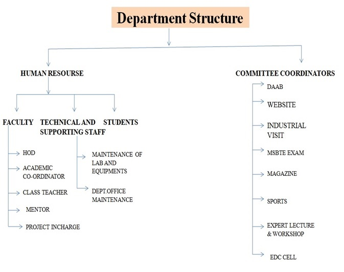

About Department

The department of Computer Engineering was established in the year 2009 with intake capacity of 60 students per
year. The Starting aim was to implement engineering diploma programme in Computer Engineering. This department
is affiliated to A.I.C.T.E. , New Delhi , M.S.B.T.E Mumbai.
The labs are fully equipped with the state of the art computer systems, open source software’s, licensed
software’s and modern teaching aids. Experienced, dynamic and young teaching faculty contributes to the
dissemination of technical knowledge and solves the real-time problems along with the students. The Students are
motivated to undertake industry-related issues, provide community services and be a part of nation-building.
The strong alumni base serving across the nation / world for many years is a milestone in the achievements of
the department goals and programme outcomes. The department is committed to foster the innovation and research
attitude in the minds of the youngsters. We are bound to involve in the social and technical mission of the
nation.
vision
“ To be a center of excellence in the field of computer engineering by enabling our students technically superior and ethically strong. Who in turn serve for the betterment of the society.”
Mission:
Mission
To achieve the vision the department will-
To impart latest technical education and knowledge in the field of computer engineering.
To prepare our student to be professionally and morally sound technocrats.
To provide intellectual inputs to knowledge based industry in the form of qualified and trained man power.
Department Structure

Program Educational Objective
To equip students with essential technological and intellectual ability to face rapidly changing demands of IT industry.
To create the ability in student to design and analyze, develop and test need based software system.
To solve problems by implementing industry driven curriculum programs effectively.
To facilitate students with exposure to current entrepreneur skills & technologies.
To create aware ness for social, ethical human values.
Back to home